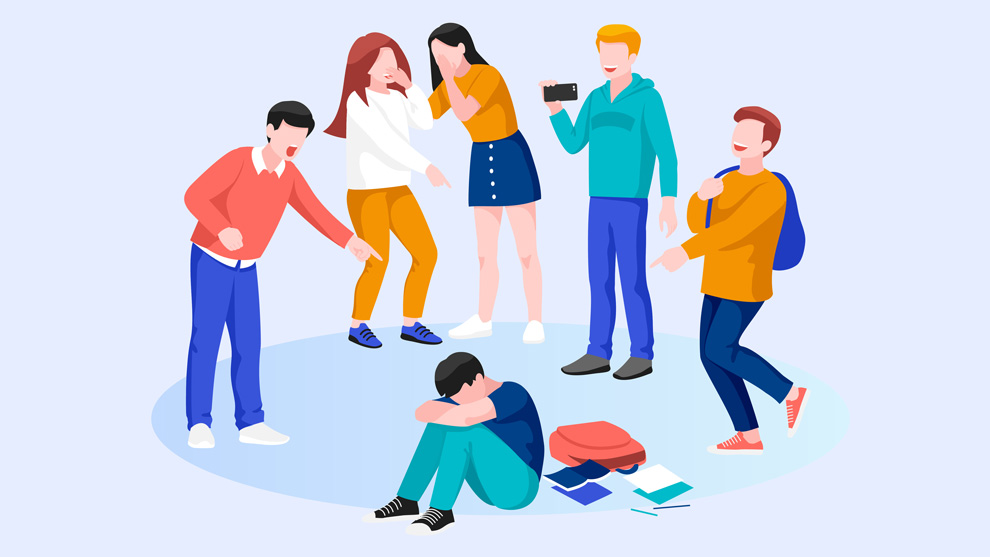
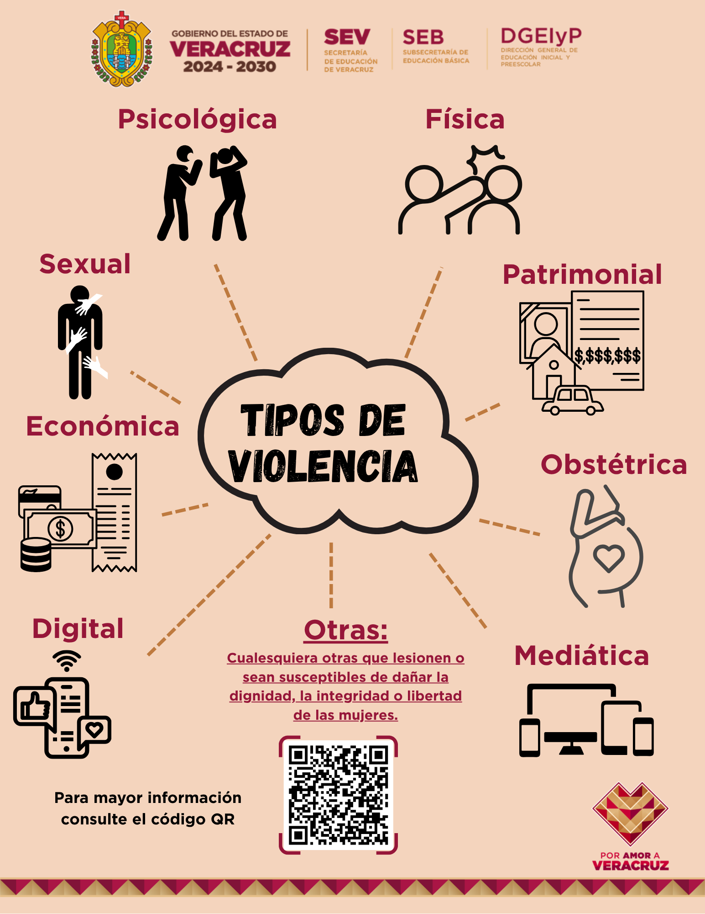

2. Prevención de la Violencia Escolar
La prevención implica crear estrategias colectivas para identificar riesgos a tiempo, promover la cultura de paz, fomentar la resolución pacífica de conflictos y garantizar un espacio seguro libre de acoso (bullying) o cualquier tipo de agresión.

3. ¿Qué es la Violencia y sus Tipos?
Definición: Es el uso intencional de fuerza física o el poder (ya sea de forma de amenaza o de acción real) contra uno mismo, otra persona o un grupo.
Tipos de violencia:
- Física: Uso de la fuerza corporal, objetos o armas para generar dolor o lesiones en el cuerpo.
- Psicológica o emocional: Acciones u omisiones como insultos, humillaciones, amenazas o aislamiento.
- Sexual: Cualquier acto o coacción de índole sexual ejercido sin el consentimiento de la otra persona.
- Económica y patrimonial: Control de los recursos financieros, restricción al trabajo o daño a los bienes.
- Social o estructural: Condiciones de desigualdad, discriminación o injusticia institucionalizadas.

Ámbitos donde se manifiesta:
- Familiar: Agresiones dentro del hogar o entre personas con lazos de parentesco o pareja.
- Comunitario y social: Violencia en espacios públicos, delincuencia o crimen organizado.
- Laboral y escolar: Abuso de poder en el trabajo o acoso escolar (bullying) entre pares.
4. Canales de Apoyo y Denuncia
Si tú o alguien que conoces sufre de violencia, existen instancias y líneas de ayuda disponibles:
- Instancias Internas (CETis 29): Dirección, Orientación Educativa, Tutorías y el Comité Escolar de Convivencia.
- Línea de Emergencias Nacional: 911 (Para riesgos inmediatos).
- Consejo Ciudadano (Línea de Seguridad y Chat de Confianza): 55 5533 5533 (Atención gratuita 24/7).
- Denuncia Anónima: 089.
- DIF (Procuraduría de Protección de Niñas, Niños y Adolescentes): 55 3003 2200.

Encuesta
Y aquí puedes responder nuestra encuesta. Tu opinión es importante para conocer mejor las respuestas y experiencias de los usuarios.